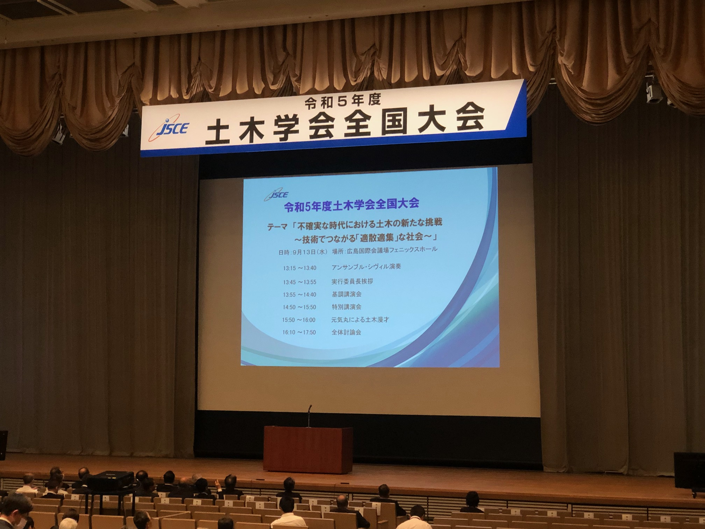

令和5年度土木学会全国大会に出席しました
投稿｜2023年10月11日 更新｜
令和5年度土木学会全国大会（9/13～15）に出席しました．
”適散適集”というコンセプトのもと，広島大学東広島キャンパスと広島工業大学五日市キャンパスの2会場で一般講演が行われました．

土木学会
学会が催されるに当たって，都市のオペレーションが回らなっているのは幾度か経験したことがあるので， そうしたことを回避するという意味，また，コロナ禍を経て，複数の場所で時間を共有する術を身に着けたことから， 新しいイベントの在り方の可能性を模索しやすくなったという意味において，面白い試みだとは思いました． しかしながら，実際は聴講しにくかった感が否めません． 両方の会場で聞けるように，片方では対面で，もう片方ではライブ映像を流しているセッションもあった一方で， 片方でしか聞けないセッションもままありました．会場間は移動に2時間くらいかかるので， 諦めざるを得ないセッションもあったのが残念です． 去年初めて参加したときの新鮮さも今年はそこまで感じられず，不完全燃焼です．
実は，裏では建築学会大会が京都で行われていて，そちらも諦めなければなりませんでした． てっきり被らないように調整しているものだとばかり思っていました...